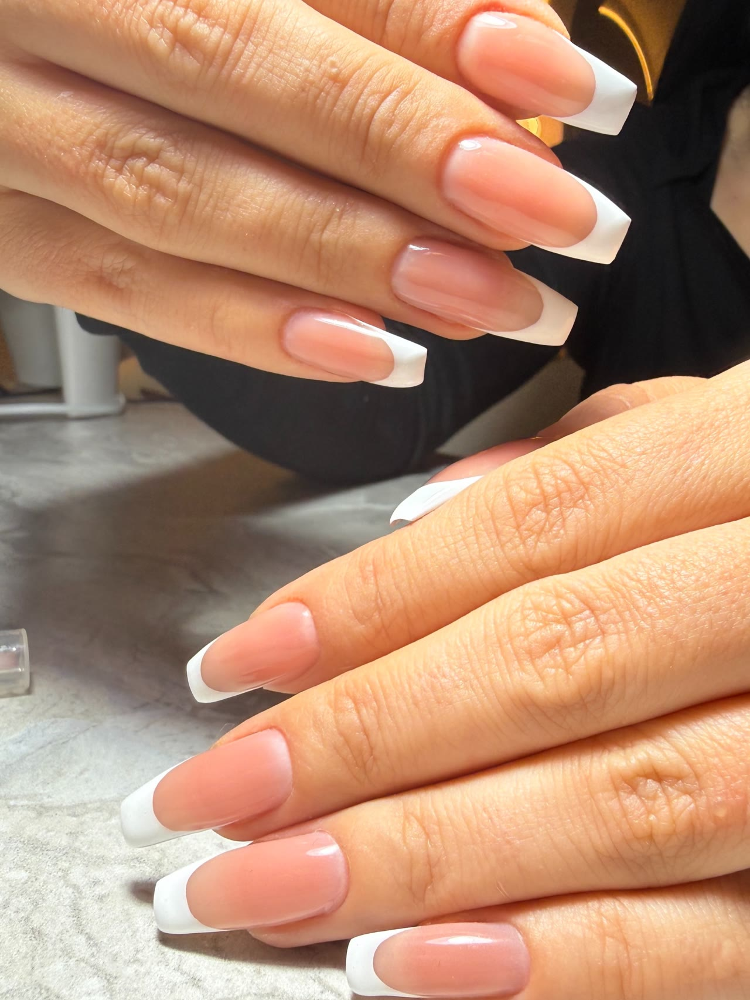
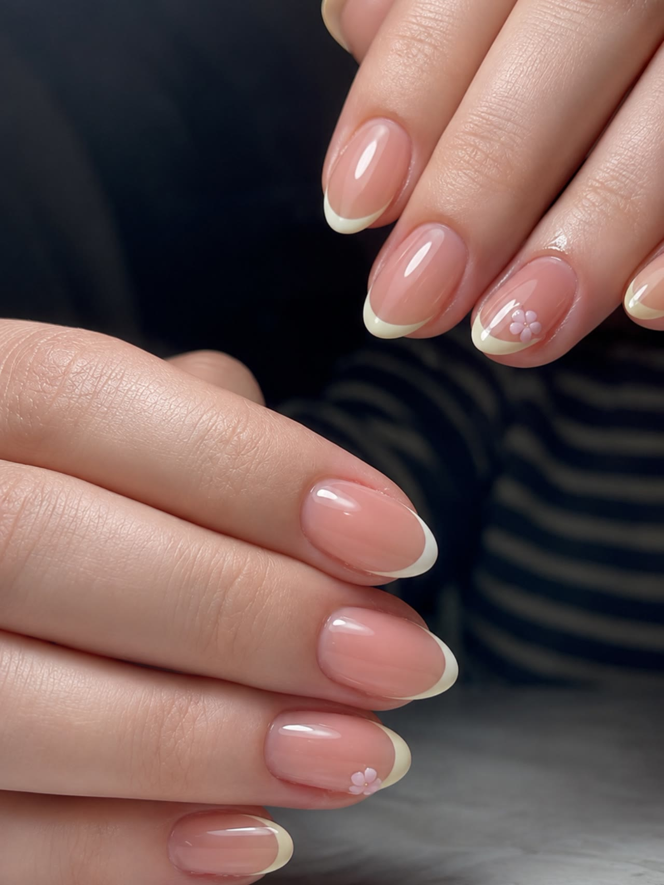
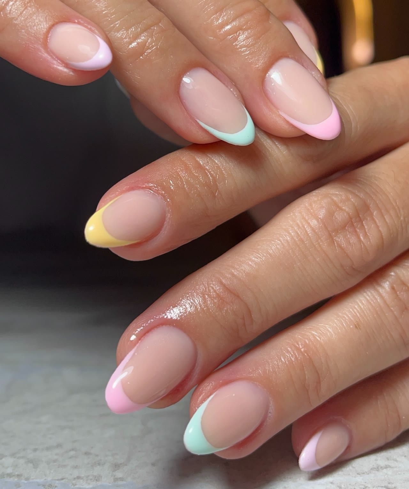
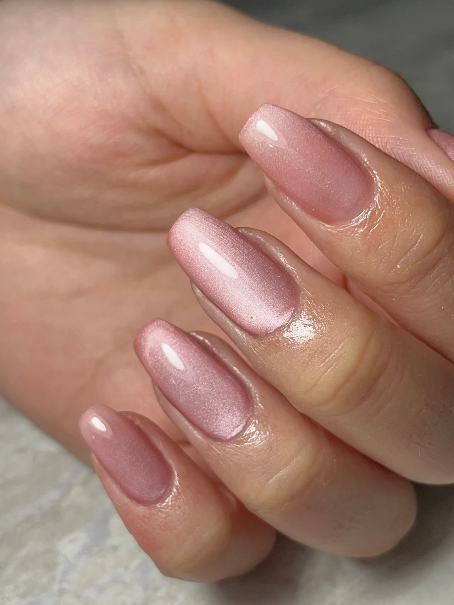
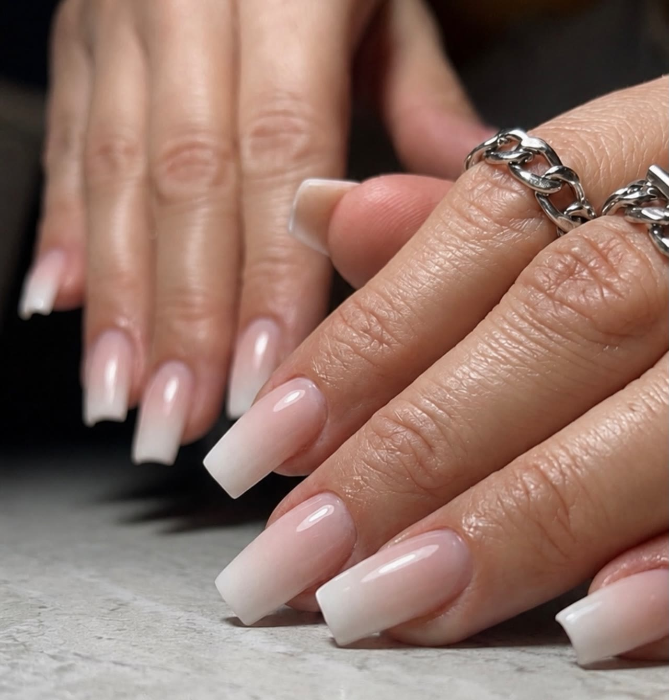
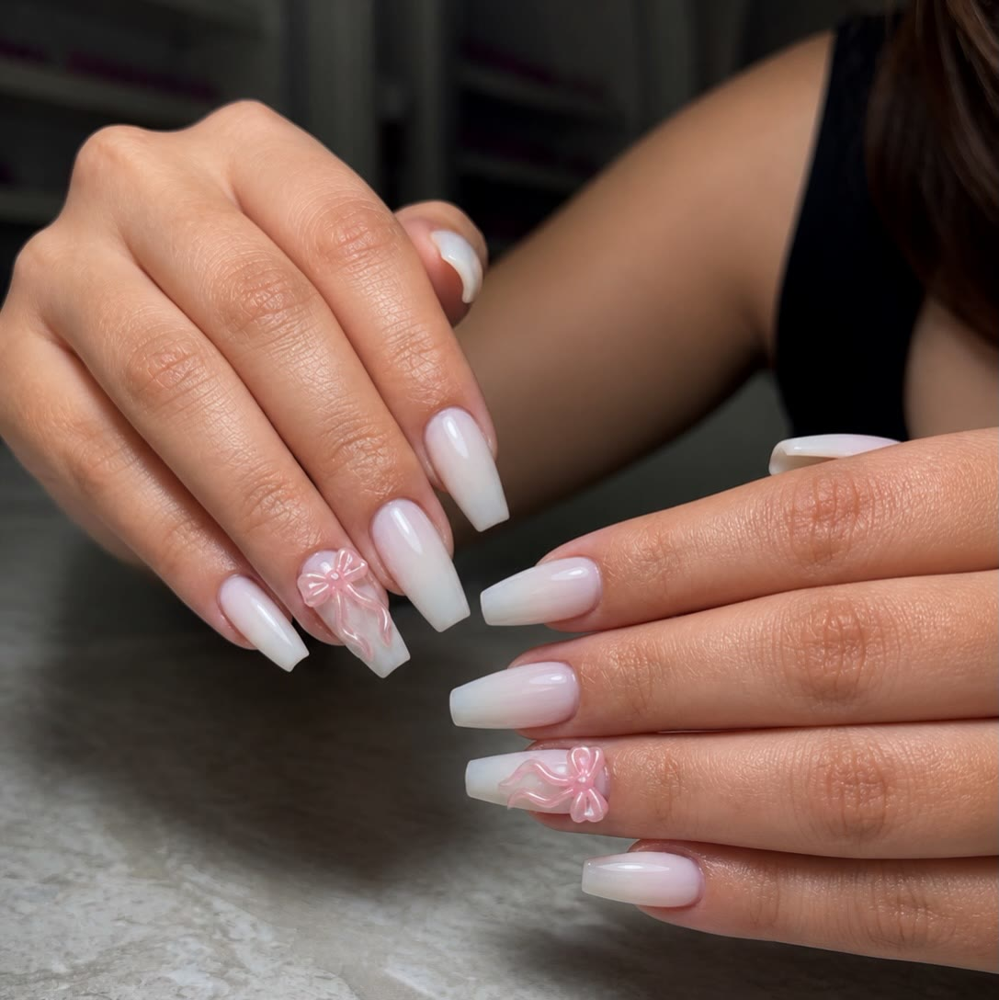
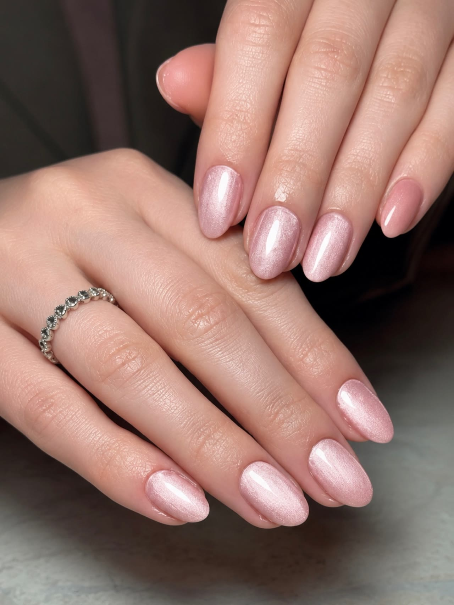
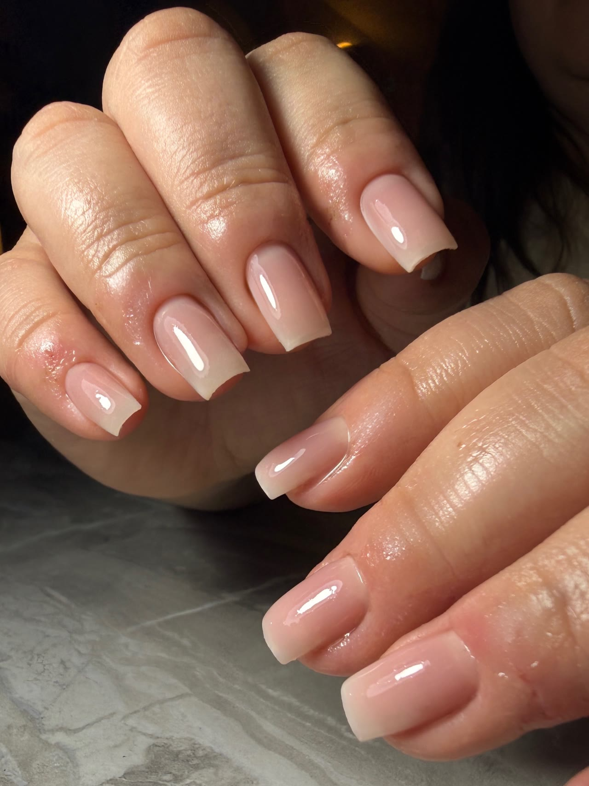

İstediğiniz model, birebir.
Protez tırnak, jel güçlendirme, kalıcı oje ve nail art. Cumhuriyet Mahallesi metrobüs durağının yanında, Çebi Natura Green Office’te.
5,0 Google’da 28 yorumHer gün 10.00–18.00
Hangi model?
Salonumuzda yapılan modellerden birkaçı. Pinterest’te gördüğünüz bir modeli de getirebilirsiniz.

FrenchKlasik ve tertemiz
Tereyağı sarısıYazın aranan french
Renkli frenchHer parmağa ayrı renk
Cat eyeIşıkta parlayan pembe
OmbreYumuşak geçişli
KurdeleMinik bir dokunuş
Jel güçlendirmeKendi tırnağınız, daha güçlü
Tırnak yeme bakımıYeme ve et koparmaya karşı
Hizmetlerimiz
- Protez tırnakDoğal boydan ekstra uzuna, istediğiniz form.
- Jel güçlendirmeKendi tırnağınızı güçlendirir, doğal görünür.
- Kalıcı ojeManikürle birlikte, uzun süre canlı renk.
- Nail artFrench, cat eye, ombre ve çizim tasarımlar.
- Manikür ve pedikürHijyene dikkat edilerek, özenle.
- Tırnak yeme bakımıTırnak yeme ve et koparma alışkanlığı olan tırnaklar için.
Hakkımızda
Merve Taşkın Nail Art, Beylikdüzü ile Esenyurt’un buluştuğu noktada, Çebi Natura Green Office’in dördüncü katında. Kemerli raflarıyla ferah ve aydınlık bir salon.
Yorumlarda en çok geçenler: hijyen, güler yüz ve bir çayın gidip bir kahvenin geldiği ikramlar. Misafirlerimizle Merve Hanım ve Melike Hanım ilgileniyor.
- 5,0Google puanı
- 28Google yorumu
- 7 günHer gün açık
- 4. katÇebi Natura Green Office
Misafirlerimiz ne diyor?
5,0Google’da 28 yorum
Kızlar, gönül rahatlığıyla tercih edebileceğiniz bir yer. İstediğim model birebir aynı oldu. İşlerini çok titiz ve güzel yapıyorlar, hijyene önem veren bir işletme.
Protez tırnak için gittim. Merve Hanım o kadar güzel bir enerjiye sahip ki… Son derece hijyenik çalışıyorlar ve en önemlisi çok hızlılar. Doğru tırnakçıyı bulmak böyle bir his sanırım.
Bugün manikür pedikür yaptırdım. Çok tatlı çalışanlar, işlemleri çok iyi. Çayım kahvem eksik olmadı, bol dedikodulu bir seans geçirdik resmen.
Nasıl gelinir?
- Adres
- Çebi Natura Green Office, Barbaros Hayrettin Paşa Mah. 1994. Sk. No: 2, Kat 4, Daire 39, Esenyurt
- Açık
- Her gün 10.00–18.00
- Telefon ve WhatsApp
- 0543 443 09 52
MMetrobüsle gelin: Cumhuriyet Mahallesi durağının yanındayız.